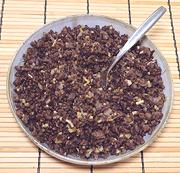

|
Beef & Ginger ToppingJapan | ||||
| Makes: Effort: Sched: DoAhead: |
2 cups ** 30 min Yes |
Ridiculously simple, but very tasty. Use as a topping for Ramen Soup, Rice, Noodles, or whatever else need enhancing. Makes 2 cups / 10 oz. | |||
|
1 2 1 1/2 1 1/2 |
# in oz T t T |
Beef Ground Ginger Root Onion Oil Salt Soy Sauce |
Prep - (15 min)
|